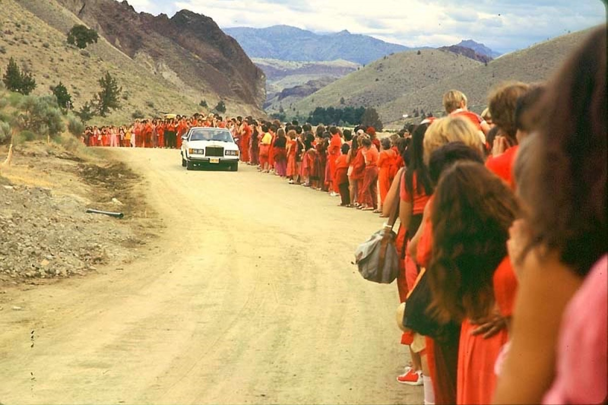

What a threat changes
Women recruited into DOS handed over intimate photographs and damaging confessions before learning that Keith Raniere ran the group. Recruiters described a women-only mentorship society. The material was kept to prevent members from leaving or revealing its existence. DOJ, 2020
DOS was a secret group associated with the self-help company NXIVM. Threats involving this material, called collateral, were used to obtain labor and sex acts. Raniere was convicted of offenses including sex trafficking and forced labor conspiracy. Refusal could expose a member or her family to humiliation.
Coercion means obtaining compliance through force or threats. Someone can sincerely want a demanding religious life and still be deceived about its demands or punished for refusing an act. Wanting to join does not settle whether later consent was free.
The five cases here differ in both conduct and evidence. NXIVM's crimes were tried in court. Jonestown left testimony, documents and a recording of its final meeting. Heaven's Gate left statements defending its members' deaths as a spiritual departure. Scientology disputes accounts of coercion, and one important lawsuit failed.
How choice gets restricted
A threat can make someone comply without changing what they believe. Isolation can make a threat harder to check, and dependence on the group can make refusal harder to afford. A friendly welcome alone establishes none of these pressures.
A conviction, a witness account and a religious teaching establish different things. The pressures shown here differ in severity.
Lifton's eight themes
Psychiatrist Robert Jay Lifton's Thought Reform and the Psychology of Totalism (1961) studied Chinese thought-reform programs. Chapter 22 describes eight recurring themes of an environment that claims authority over a person's entire life. These themes describe control without supplying a diagnostic cutoff. Lifton, chapter 22
The eight, in plain terms
Milieu control
Control of communication with others and of what a person can think or discuss privately.
Mystical manipulation
Experiences arranged by leaders are presented as spontaneous proof of a higher purpose.
The demand for purity
An absolute division of good from evil makes ordinary imperfections grounds for guilt.
The cult of confession
Required confession makes private life available for judgment and demands for conformity.
Sacred science
A doctrine claims both moral authority and scientific certainty, insulating itself from criticism.
Loading the language
Stock phrases compress difficult questions into answers that discourage further thought.
Doctrine over person
Experience that contradicts the teaching is dismissed or reinterpreted to preserve it.
The dispensing of existence
The doctrine decides whose lives have legitimacy; outsiders may be denied that standing.
Steven Hassan's BITE model groups controlling practices under behavior, information, thought and emotion. It is an advocacy framework, used here to suggest questions, not a validated clinical diagnostic instrument. Nor does coercion require every item on its list. In his later writing, Lifton also cautioned that groups must be judged individually and opposed coercive deprogramming, including kidnapping someone to force them out of a faith. Lifton, 1991
Five records of authority and harm
Each case describes the offer, the leadership, restrictions or abuse, what happened to people who left or dissented, and the outcome.
Commitment, coercion and choice
Leaving can be costly without anyone arranging a punishment. A monk may lose a vocation; a migrant may lack money to move. Cost alone doesn't establish that a group created or exploited dependence.
Ask what the group adds to those difficulties. Does it withhold documents, threaten violence or exposure, deceive recruits about a leader's role, or punish people for contacting family? Was a demand explained before consent, and can someone refuse it without retaliation? In DOS, threatened disclosure of collateral gives concrete answers. A shared haircut, unusual theology or expensive course does much less.
What brainwashing explains, and doesn't
The claim that a group can reliably erase a person's will exceeds the evidence. In a 2011 account of her research, sociologist Eileen Barker reported tracking more than a thousand attendees at Unification Church residential workshops around London in 1979. About 90 percent did not join; most of those who joined left voluntarily within two years. That finding concerns a particular recruitment setting. It doesn't tell us what occurred in DOS or a guarded settlement in Guyana.
In 1987 an American Psychological Association board rejected the DIMPAC task force's report on deceptive persuasion for lacking the required scientific rigor and critical balance. Its memorandum also said the board lacked enough information to take a position on the issue. That was a judgment on the report, not a finding that coercion cannot occur. Blackmail and confinement don't become uncertain because researchers disagree about the word brainwashing.
Jonestown is often described as mass suicide, as though everyone made the same decision.
Children were killed by adults. The surviving recording contains dissent as well as approval of Jones' proposal. The limited forensic record cannot determine the part force, fear or agreement played in every adult death.
Questions to ask before committing
- Can I check the group's claims independently? Ask to speak with former members, and read accounts outside its own publications.
- What am I agreeing to? Check the terms for money, work and personal disclosures.
- What happens if I refuse? Ask how it treated someone who declined a demand or criticized a leader.
- What can I keep outside? Pay attention to control of documents, income, medical decisions and contact with people who aren't members.
On Jonestown's final recording, Christine Miller says of the children that “they deserve to live.” She argues with Jones and the crowd. Her words establish that dissent was present; gaps and disputed passages in the tape leave much of that evening beyond recovery. Q042, November 18 Project transcript
Sources, and their limits
Court records establish legal outcomes in particular cases. Witness accounts describe experiences that may be disputed. Group publications establish what a group said, not whether its claims were true. The cases label those differences; the frameworks don't assign any group a diagnostic score.
The records and scholarship, grouped by topic
- The frameworks and the research dispute
- Robert Jay Lifton (1961). Thought Reform and the Psychology of Totalism, chapter 22. Chapter reprint.
- Lifton (1991). Eight criteria for thought reform in cults. Discusses context, exploitation and civil liberties. Author's article, reprinted by ICSA.
- Steven Hassan. BITE model of authoritarian control. Developer's account.
- APA board memorandum (May 11, 1987). Rejects the DIMPAC report and declines to take a position on the broader issue. Document reproduced by CESNUR.
- Eileen Barker (2011). Stepping out of the ivory tower: a sociological engagement in the cult wars. Author's account of the research behind The Making of a Moonie (1984), especially manuscript page 4. LSE accepted manuscript.
- Scientology
- Church of Scientology. Origins; symbolic Sea Org pledge; disconnection and the church's denial of compulsory separation. Primary statements of its position.
- Headley v. Church of Scientology International (2012). Ninth Circuit opinion. Describes the record, rejects the forced labor claims, and expressly leaves other legal theories undecided. Full opinion.
- NXIVM and DOS
- US Department of Justice (2019). Verdict account, including DOS threats, coercion and branding. June 19.
- US Department of Justice (2020). Raniere's sentence, false recruitment premise, collateral and confinement of Daniela. October 27. Prosecutors' account following conviction, rather than an independent history of every NXIVM participant.
- Rajneeshpuram
- T. J. Török and colleagues (1997). A large community outbreak of salmonellosis caused by intentional contamination of restaurant salad bars. JAMA 278:389-395. The outbreak affected 751 people; ten restaurants were definitely implicated, eight of them with salad bars. Paper at CDC.
- Oregon Historical Society. Ma Anand Sheela's leadership, surveillance and prosecution. Its summary says ten salad bars; the epidemiologic paper gives the more precise distinction above. Photograph and historical account.
- US District Court of Oregon Historical Society (2019). Event with participants in the original litigation, recording Rajneesh's immigration plea and the charges against commune members. Case background.
- Peoples Temple and Jonestown
- Deborah Layton Blakey (1978). Affidavit submitted before the deaths, describing threats, work, guards and a suicide rehearsal. Primary testimony at SDSU. Some statements are expressly based on information and belief.
- House staff investigative report (1979). Ryan's visit and the airstrip killings. Its findings are those of the staff group, not necessarily the committee. Full report.
- Jonestown Institute. Death toll scopes: 909 at Jonestown, five at Port Kaituma, four in Georgetown. This essay omits a precise child count; published totals differ with age thresholds and the population counted.
- Q042, November 18, 1978. Final meeting recording. 2025 transcript by Shannon Howard, Adrian Whicker, Joel X. Thomas and Brian Holtz, credited to the Jonestown Institute. Edits, indistinct speech and competing readings limit what it establishes. The AFIP autopsy reports and covering letter document the limited forensic examinations.
- Heaven's Gate
- Heaven's Gate. Final homepage; Applewhite's introduction; A member's account of bodies and teachers; Our position against suicide. Primary doctrine, not proof of an extraterrestrial destination. Wendy Gale Robinson's Heaven's Gate: The End identifies the teachers.
- San Diego County Sheriff. Welfare check on March 26, 1997; 39 deaths over several days, investigated as mass suicide. Case record.
- The photograph
- Samvado Gunnar Kossatz. Osho drive-by at Rajneeshpuram, summer 1982. Wikimedia Commons, attribution-only license.